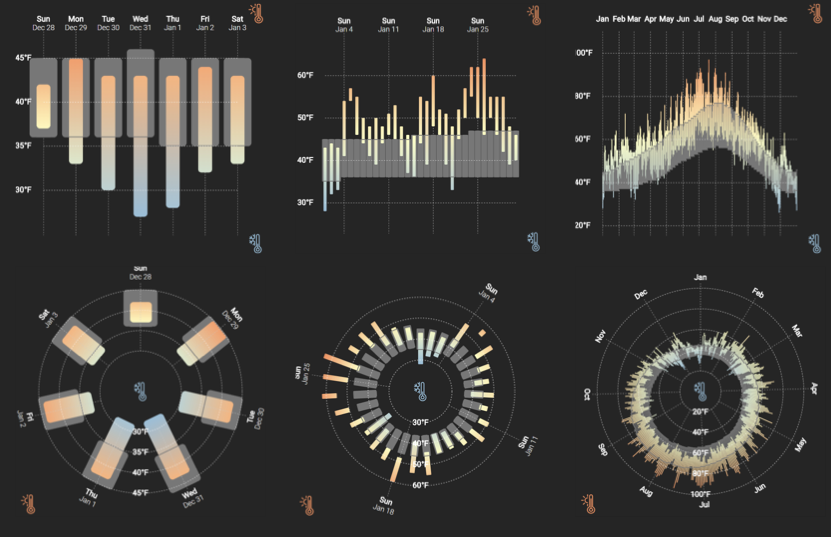

Crowdsourced Evaluation for Mobile Vis
Matthew Brehmer · mattbrehmer.ca · @mattbrehmer
mb@mattbrehmer.ca
mattbrehmer.ca / talks / dagstuhl19292
Tutorial at Dagstuhl Seminar #19292: Mobile Data Visualization, 2019-07-17
Tutorial Outline
· Context for this tutorial
· Building mobile-only web apps for visualization experiments
· Recruiting, piloting, and onboarding crowd workers
· Improving compliance and response quality
· Other resources
· Prospects for the future
Tutorial Outline
· Context for this tutorial
· Building mobile-only web apps for visualization experiments
· Recruiting, piloting, and onboarding crowd workers
· Improving compliance and response quality
· Other resources
· Prospects for the future
Context for this Tutorial
Visualizing Ranges over Time on Mobile Phones: A Task-Based Crowdsourced Evaluation.
M. Brehmer, B. Lee, P. Isenberg, and E. K. Choe. In IEEE TVCG 2019 (Proc. InfoVis 2018).

The first crowdsourced visualization evaluation study performed exclusively on phones.
aka.ms/ranges | (mobile only) experimental app.
aka.ms/ranges-tvcg (paper) | github.com/Microsoft/RangesOnMobile
Context for this Tutorial (cont.)
A Comparative Eval. of Animation & Small Multiples for Trend Visualization on Mobile Phones.
M. Brehmer, B. Lee, P. Isenberg, and E. K. Choe. To appear in IEEE TVCG (Proc. InfoVis 2019).

 A crowdsourced visualization evaluation study performed
exclusively on phones.
A crowdsourced visualization evaluation study performed
exclusively on phones.
aka.ms/multiples | (mobile only) experimental app.
arxiv.org/abs/1907.03919 (paper) | github.com/Microsoft/MobileTrendVis
Tutorial Outline
· Context for this tutorial
· Building mobile-only web apps for visualization experiments
· Recruiting, piloting, and onboarding crowd workers
· Improving compliance and response quality
· Other resources
· Prospects for the future
Creating Mobile Vis Experiences
Everything Except the Chart: Responsiveness + Mobile Support.
D. Baur & M. Stefaner. IEEE VIS 2018 Tutorial.
webvis-do.minik.us/#/responsiveness
Techniques for Data Visualization on both Mobile & Desktop.
N. Bremer. Visual Cinnamon, April 2019.
visualcinnamon.com/2019/04/mobile-vs-desktop-dataviz
Effectiveness & Efficiency: Data Visualization for Small Screens.
J. Camões. European Comm. Conf. New Techniques & Technologies for Statistics, 2019.
webcast.ec.europa.eu (8h36m - 8h55m)
Building Responsive Data Visualization for the Web.
B. Hinderman. Wiley, 2016.
responsivedatavisualization.com
Mobile-Only Vis Experimental Apps
· Ensuring mobile-only
· Aiming for consistency across Mobile OS, browser apps
· Handling orientation changes
· Handling interruptions
· Handling touch events
· Trial interaction design
· Compartmentalizing the app
· Logging participant activity + metadata
Check Your Head
< head >
...
< meta name="HandheldFriendly"
content="true" />
< meta name="apple-mobile-web-app-capable"
content="yes" />
< meta name="mobile-web-app-capable"
content="yes" />
< meta name="viewport"
content="minimal-ui,
width=device-width,
initial-scale=1.0,
minimum-scale=1.0,
maximum-scale=1.0,
user-scalable=no" />
...
< /head>
In non-experimental settings, set user-scalable to yes for accessibility.
CSS Media Queries
@media only screen
and (min-device-width: 320px)
and (max-device-width: 1440px)
and (max-device-height: 1440px)
and (-webkit-min-device-pixel-ratio: 2)
and (orientation: portrait) {
...
}
@media only screen
and (orientation: landscape) {
...
}
@media only screen
and (min-device-width: 1440px) {
...
}
Most contemporary smartphones have device pixel ratios > 2.
Handling Orientation (Change)
Ensure desired phone orientation (portrait / landscape)
window.addEventListener('load', function() {
// respond to loading in undesirable orientation
}
window.onresize = function(e) {
// respond to rotation to undesirable orientation
}
Handling Interruptions & Resumptions
e.g., the participant switches apps, responds to a notification, etc.
window.onblur = function(e) {
// respond to interruption (e.g., log + discard trial)
}
window.onfocus = function(e) {
// respond to resumption
}
Handling Touch Events
d3.select('#some_button')
.on('touchstart', function() {
d3.event.preventDefault();
// respond to touch event
}
Also: touchmove, touchend
Project Structure Example: MobileTrendVis
app.js // node application requiring express, socket.io, ...
package.json
participantList.js // for server-side condition allocation
web.config
webpack.config.js
src
globals.js // global variables
index.js // app initialization
dataset.js // stimuli data (UN economic metrics)
chart.js // the visualization stimuli
taskList.js // experimental task specifications
initTasks.js // allocate tasks and conditions to participant
trial.js // specifying the logic of a single trial
public
style.css
index.html
main.js // output from webpack
assets // folder of images, icons, etc.
Interaction Design: RangesOnMobile
Interaction Design: MobileTrendVis
Logging Activity w/ AppInsights
trial = {
user_id: userID,
trial_index: trial_index,
condition: trial_condition,
accuracy: 0,
start_time: 0,
interruptions: 0,
interruption_time: 0,
end_time: 0,
completion_time: 0,
give_up: false,
...
};
appInsights.trackEvent("TrialComplete", trial);
Application Insights custom event logging also includes client metadata in the tail of each log event (e.g., device, browser, approximate location).
Logging Participant Metadata
> colnames(p_metadata.df)
[1] "user_id" "load_time" "completion_time" "duration"
[5] "client_Model" "client_OS" "client_Reg" "client_Browser"
[9] "condition" "ordering" "Height" "Width"
[13] "chart_dim" "excluded"
> levels(p_metadata.df$client_OS) # MobileTrendVis
[1] "Android"
"Android 4.3"
"Android 5.0"
"Android 5.1"
"Android 6.0"
"Android 7.0"
"Android 7.1"
[8] "Android 8.0"
"Android 8.1"
"iOS 10.3"
"iOS 11.4"
"iOS 12.0"
"iOS 12.1"
Logging Participant Metadata (Cont.)
> levels(p_metadata.df$client_Browser) # MobileTrendVis
[1] "Chrome Mobile 51.0"
"Chrome Mobile 56.0"
"Chrome Mobile 59.0"
"Chrome Mobile 67.0"
[5] "Chrome Mobile 68.0"
"Chrome Mobile 69.0"
"Chrome Mobile 70.0"
"Chrome Mobile 71.0"
[9] "Chrome Mobile iOS 68.0"
"Chrome Mobile iOS 70.0"
"Chrome Mobile iOS 71.0"
"Facebook 193.0"
[13] "Firefox iOS 13.2"
"Firefox Mobile 63.0"
"Mobile Safari 10.0"
"Mobile Safari 11.0"
[17] "Mobile Safari 12.0"
"Samsung Internet 7.4"
Logging Participant Metadata (Cont.)
> summary(participant_metadata.df$Height)# MobileTrendVis
Min. 1st Qu. Median Mean 3rd Qu. Max.
452.0 549.2 560.0 587.0 620.5 822.0
> summary(participant_metadata.df$Width)# MobileTrendVis
Min. 1st Qu. Median Mean 3rd Qu. Max.
320.0 360.0 375.0 378.6 412.0 414.0
Tutorial Outline
· Context for this tutorial
· Building mobile-only web apps for visualization experiments
· Recruiting, piloting, and onboarding crowd workers
· Improving compliance and response quality
· Other resources
· Prospects for the future
Recruiting + Piloting
Ranges Over Time experiment (InfoVis 2018):
· 13 colleagues in pilot experiment #1, local & remote
· 12 crowdsourced participants (MTurk) in pilot experiment #2
· 100 crowdsourced participants (MTurk) in final experiment (13 excluded)
---
· 125 participants (total)
Mobile Trend Vis experiment (InfoVis 2019):
· 20 colleagues in pilot experiment #1, local & remote
· 16 crowdsourced participants (MTurk) in pilot experiment #2
· 16 crowdsourced participants (MTurk) in pilot experiment #3 (improved quality control, added trial time-out)
· 113 crowdsourced participants (MTurk) in final experiment (17 excluded)
---
· 165 participants (total)
Repeating & Staging the Consent Process
Onboarding: Tutorial + Training (Video)
Tutorial Outline
· Context for this tutorial
· Building mobile-only web apps for visualization experiments
· Recruiting, piloting, and onboarding crowd workers
· Improving compliance and response quality
· Other resources
· Prospects for the future
Assigning & Balancing Conditions
socket.on('userID', function(msg) { // new participant
if (participantList.length > 0) {
// move next participant to progressList
// participantList contains condition assignments
}
else if (completedList.length > 0) {
// add extra participant considering completedList
// and its participants' condition assignments
}
else if (progressList.length > 0) {
// add extra participant when no one has finished yet
}
else {
// this shouldn't ever happen, but if it does, randomize
}
}
Quality Control Trials
Extremely simple task among shuffled test tasks; if incorrect, exclude participant from analysis.
Compliance & Quality Control Measures
· Onboarding tutorial
· Training trials with correctness feedback
· Unlimited attempts at training trials; hints shown after 3 failed attempts
· Timeouts on all trials; option to 'Give Up' or 'Continue'
· Quality control trials inserted among test trials
· Metadata log screening: device, OS, browser, location, ...
Tutorial Outline
· Context for this tutorial
· Building mobile-only web apps for visualization experiments
· Recruiting, piloting, and onboarding crowd workers
· Improving compliance and response quality
· Other resources
· Prospects for the future
Another Recent Experiment
Evaluating Pan and Zoom Timelines and Sliders.
M. Schwab, S. Hao, O. Vitek, J. Tompkin, J. Huang, & M. A. Borkin. In Proc. ACM CHI 2019.
A crowdsourced visualization evaluation study performed on both PCs and phones.
doi.org/10.1145/3290605.3300786 | multiscale-timelines.ccs.neu.edu
Crowdsourcing for InfoVis (in General)
Information Visualization Evaluation using Crowdsourcing.
R. Borgo, L. Micallef, B. Bach, F. McGee, & B. Lee.
In Computer Graphics Forum (EuroVis 2018 State-of-the-Art Reports).
doi.org/10.1111/cgf.13444
Crowdsourcing for Information Visualization: Promises and Pitfalls.
R. Borgo, B. Lee, B. Bach, S. Fabrikant, R. Jianu, A. Kerren, S. Kobourov, F. McGee, L. Micallef, T. Landesberger, K. Ballweg, S. Diehl, P. Simonetto, & M. Zhou.
In Evaluation in the Crowd. Crowdsourcing and Human-Centered Experiments (2017),
Springer (D. Archambault, H. Purchase, and T. Hossfeld, eds).
springer.com/gp/book/9783319664347
Crowdsourcing Graphical Perception: Using Mechanical Turk to Assess Visualization Design.
J. Heer & M. Bostock. In Proc. ACM CHI 2010.
idl.cs.washington.edu/papers/crowdsourcing-graphical-perception
Creating Mobile Vis Experiences (Encore)
Everything Except the Chart: Responsiveness + Mobile Support.
D. Baur & M. Stefaner. IEEE VIS 2018 Tutorial.
webvis-do.minik.us/#/responsiveness
Techniques for Data Visualization on both Mobile & Desktop.
N. Bremer. Visual Cinnamon, April 2019.
visualcinnamon.com/2019/04/mobile-vs-desktop-dataviz
Effectiveness & Efficiency: Data Visualization for Small Screens.
J. Camões. European Comm. Conf. New Techniques & Technologies for Statistics, 2019.
webcast.ec.europa.eu (8h36m - 8h55m)
Building Responsive Data Visualization for the Web.
B. Hinderman. Wiley, 2016.
responsivedatavisualization.com
Tutorial Outline
· Context for this tutorial
· Building mobile-only web apps for visualization experiments
· Recruiting, piloting, and onboarding crowd workers
· Improving compliance and response quality
· Other resources
· Prospects for the future
An Open-Source Framework for Crowdsourced Mobile Visualization Experiments
RangesOnMobile, MobileTrendVis experimental applications share common infrastructure:
· Node.js web application deployed on Azure
· Custom event logging with Azure Application Insights
· CSS media queries to enforce mobile-only
· Sever-side condition assignment & re-balancing
· Handlers for orientation changes & interruptions
Application developer to focus on:
· Isolated chart component
· Defining trial logic
· Trial bank initialization
Mobile-only alternative (or extension of) the experimentr framework?
experimentr. L. Harrison,
C. Gramazio, F. Yang, K. Aragam, E. Peck, and D. Schroeder (2019).
github.com/codementum/experimentr
Improved Sensing + Logging
· Using the camera and/or microphone to gauge distraction level
· Using the ambient light sensor to detect excessive glare
· Assessing the WiFi connection quality
· Using the device accelerometer to identify excessive movement
Ideas for Future Mobile Vis Experiments
· Comparing interaction design choices; extending Schwab et al (CHI 2019)
· e.g., Scrolling vs. swiping for staged animated visualization
· Replicating / extending Heer + Bostock on mobile devices (CHI 2010)
· Comparing small multiple glyph designs (e.g., calendar-based visualizations)
· Comparing small multiple time series designs; extending Javed et al (InfoVis 2010)
Tutorial Outline
· Context for this tutorial
· Building mobile-only web apps for visualization experiments
· Recruiting, piloting, and onboarding crowd workers
· Improving compliance and response quality
· Other resources
· Prospects for the future
Crowdsourced Evaluation for Mobile Vis
Matthew Brehmer · mattbrehmer.ca · @mattbrehmer
mb@mattbrehmer.ca
mattbrehmer.ca / talks / dagstuhl19292
github.com/Microsoft/RangesOnMobile | github.com/Microsoft/MobileTrendVis
Tutorial at Dagstuhl Seminar #19292: Mobile Data Visualization, 2019-07-17